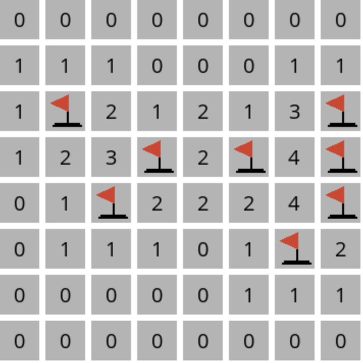
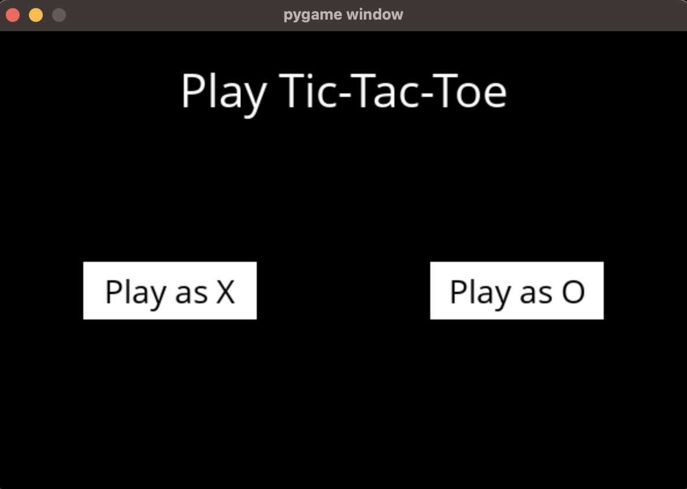
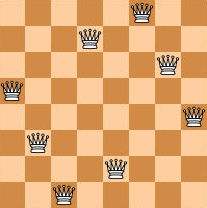
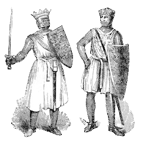
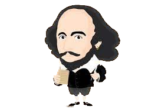

This project integrates two previous projects, Single Threaded HTTP Server and Multi-Threaded Queue, to create a server capable of
handling multiple clients simultaneously. It ensures that its responses conform to a coherent and atomic linearization
of the client requests.

Minesweeper is a puzzle game that consists of a grid of cells, where some of the cells contain hidden "mines" and others denote the number of
mines surrounding the cell. This project implements an AI that uses proppositional logic to play the safest move.
This project implements client-server model, strong modularity and large systems to fulfill HTTP protocal for GET and SET
procedures. This project demonstrates the advantages of powerful abstractions and implementing a large system that solves
a large problem.
The game "Six Degrees of Kevin Bacon" is based on the concept that every actor can be connected to Kevin Bacon through a chain
of six movies or fewer. This project integrates a BFS or DFS algorithm approach to solve this problem.

Tic-Tac-Toe AI integrates an AI that uses a Minimax algorithm to optimal search the best move against its opponent. Good luck trying
to beat this AI.

The classic N-queens problem, but with a twist. Instead of finding a possible solution to a NxN board, it tries to find a soultion to a NxN
board with preset queen placement.

The classic logic game Knight or Knave has two rules: (1) Knights always tell the truth and (2) Knaves always lie. This project translates
sentences to an encoded knowledge base such that the AI can logically reason through it to find a solution.
Multi-Threaded Queue uses C primitives to allow for multi-producer multi-consumer synchronization FIFO properties.
Ranged Based AVL handles two operations in an AVL data structure: (1) Insertion or (2) count the number of words lexigraphically between two words. It is
capable of handling 4.6 million queries in 31 seconds.

This project does a word analysis of all the compositions of William Shakespeare. It then organizes all of this data in a linked list data
structure to answer the following quiere: For any word length l and number k, what is the k most frequent word of length l?